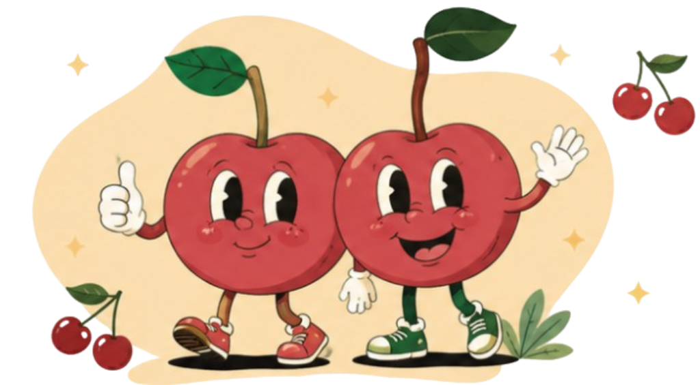

Cherry Wellness: um jeito leve de cuidar de si.
Somos um grupo de estudantes do IFC Araquari que criou um site para mostrar, de forma simples e divertida, como movimento, alimentação e saúde mental andam juntos no dia a dia.

Por que "Cherry Wellness"?
O nome é um trocadilho. Cherry é "cereja" em inglês e, falado em voz alta, lembra o nosso "seja". Wellness quer dizer "bem-estar". Juntando os dois, o nome vira um convite: seja saudável. Por isso os nossos mascotes são duas cerejas, que acompanham você por todas as páginas.
Nosso objetivo
Informação confiável sobre saúde, explicada na linguagem de quem tem a nossa idade.
O problema
A maioria dos adolescentes não se exercita o suficiente, a obesidade cresce no Brasil e muitos jovens convivem com ansiedade sem saber onde buscar ajuda. Muita informação sobre saúde é difícil de entender ou pouco confiável.
A nossa ideia
Reunir em um só lugar o essencial sobre corpo, prato e mente, com dados de fontes como a OMS e o IBGE, e transformar o aprendizado em jogo: quem lê, joga, e quem joga, lembra.
Para quem é
Para estudantes e qualquer pessoa que queira dar o primeiro passo para uma rotina mais saudável, sem cobrança e sem precisar ser perfeito.
Como o site funciona
Aprender, praticar e ganhar recompensas, em quatro passos.
-
1
Aprenda
Explore os três pilares: Vida em movimento, Prato & Saúde e Bem-Estar mental.
-
2
Jogue
Cada pilar tem um minijogo: o Ritmo em Movimento, o Monte seu Prato e o Respire e Recarregue.
-
3
Ganhe emblemas
Vencer um minijogo libera um emblema, que fica guardado na página Emblemas & Minijogos.
-
4
Enfrente o chefe
Com os três emblemas, você enfrenta a Cereja Podre na Batalha Final e mostra tudo o que aprendeu.
Quem faz o Cherry Wellness
Seis integrantes, cada um se destacando em uma função, mas todo mundo ajudando em tudo.
-
Vinícius
Programação e jogosCuida do GitHub, dos minijogos, do sistema de emblemas e da Batalha Final.
-
Lukas
Programação, CSS e atasOrganiza os tópicos de conteúdo, registra as atas e trouxe a ideia dos gráficos.
-
Gabriela
Design no FigmaDesenha a interface e os esboços das páginas antes de virarem código.
-
Letícia
Design no FigmaCria o visual das páginas e ajuda a deixar cada detalhe pensado para quem usa.
-
Murilo
CSS, mascotes e rede socialCriou os mascotes e cuida do nosso Instagram e da apresentação da equipe.
-
Gabrieli
HTML, CSS e mascotesMonta a estrutura das páginas e ajudou a criar os mascotes.
Nossa trajetória
Do primeiro encontro até a Batalha Final.
-
Junho de 2026
O começo
Dividimos as tarefas, escolhemos os três temas (corpo, alimentação e mente) e criamos o repositório no GitHub e a rede social.
-
Julho de 2026
Nome, mascotes e o primeiro jogo
Nasceram o nome Cherry Wellness e as duas cerejas mascotes. Começamos o primeiro minijogo e o sistema de emblemas.
-
Agosto de 2026
Mais jogos e um visual único
Novos minijogos, o design finalizado no Figma e a padronização do código de todas as páginas.
-
Setembro de 2026
A Batalha Final
O chefe final ficou pronto e o site foi preparado para a apresentação na SEPE.
Feito com
- HTML
- CSS
- JavaScript
- Figma
- GitHub
Bora começar?
Escolha um pilar, aprenda algo novo e conquiste seu primeiro emblema. Seu bem-estar agradece.